Numerical Analysis
Table of Contents
- Chap1 Mathematical Preliminaries
- Chap2 Solutions of equations in one variable
- Chap3 Interpolation and polynomial approximation
- chap4 numerical differentiation and integration
- Chap6 Direct Methods for Solving Linear Systems
- Chap7 Iterative techiniques in Matrix algebra
- Chap8 Approximation theory
- chap9 Approximating Eigenvalues
- TODO hw
[0/15]
Chap1 Mathematical Preliminaries
1.2 Roundoff Errors and Computer Arithmetic
Truncation Error : the error involved in using a truncated, or finite, summation to approximate the sum of an infinite series
Roundoff Error: the error produced when performing real number calculations. It occurs because the arithmetic performed in a machine involves numbers with only a finite number of digits.
Suppose 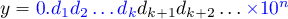, then
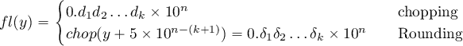
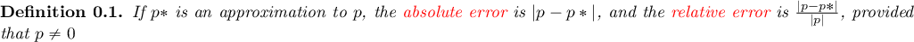
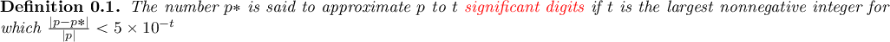
- chopping
- 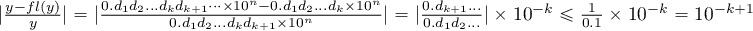
- rounding
- 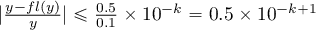
Finite digit arithmetic
- 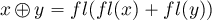
- 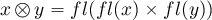
- 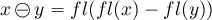
- 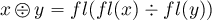
1.3 ALgorithms and Convergence
An algorithm that satisfies that small changes in the initial data produce correspondingly small changes in the final results is called stable; otherwise it is unstable. An algorithm is called conditionally stable if it is stable only for certain choices of initial data.
Suppose that E₀ > 0 denotes an initial error and En represents the magnitude of an error after n subsequent operations. If 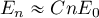, where C is a constant independent of n, then the growth of error is said to be linear. If 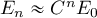, for some C > 1, then the growth of error is called exponential
Suppose 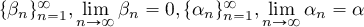. If a positive constant K exists with 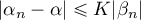 for large n, then 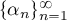 converges to α with rate, or order, of convergence 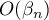
Suppose 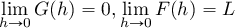 and 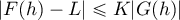 for sufficiently small h, then we write 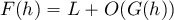
Chap2 Solutions of equations in one variable
2.1 Bisection method
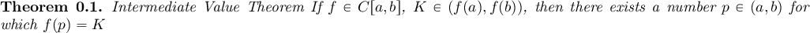
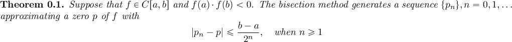
2.2 Fixed-Point Iteration
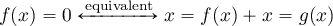

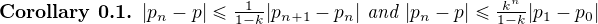
2.3 Newton's method
Linearize a nonlinear function using Taylor's expansion
Let 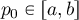 be an approximation to 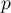 s.t. 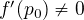, hence , then 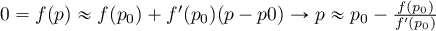 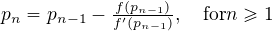
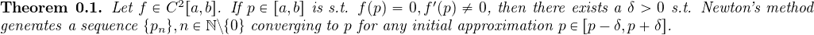
2.4 Error analysis for iterative methods
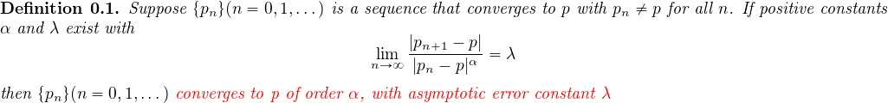
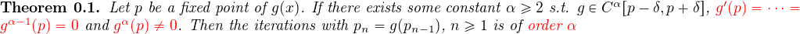
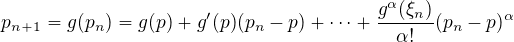
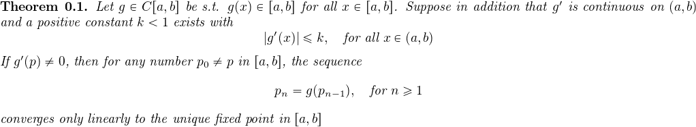
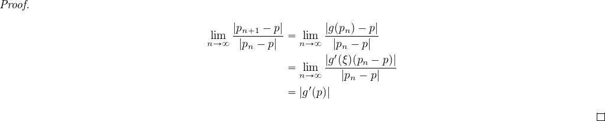
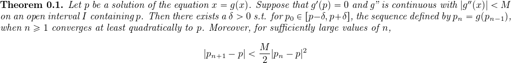
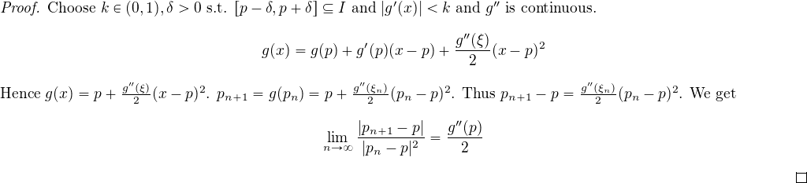
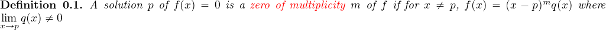
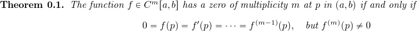
To handle the problem of multiple roots of a function 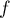 is to define 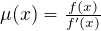.
If p is a zero of f of multiplicity m with 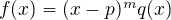, then
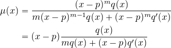
And 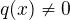.
Now Newton's method:
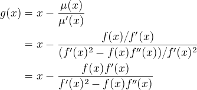
Chap3 Interpolation and polynomial approximation
3.1 Interpolation and the Lagrange polynomial
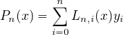. Find 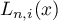 for
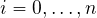 s.t. 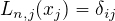.  Kronecker delta.
Each 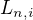 has n roots 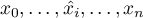.
.
.
Hence
Kronecker delta.
Each 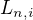 has n roots 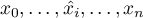.
.
.
Hence
Analyze the remainder. Suppose and . Consider . has at least n+1 roots => . For any . Define . has n+2 distinct roots . Hence . . Thus .
Neville's Method
3.2 Divied differences
. .
Additional Newton Interpolation
Simple idea
Given
The pattern and coefficients.
with . Newton interpolation matrix is lower triangular. Lagrange matrix is identity.
Basis transformation
Hence .
3.3 Hermite interpolation
Find the osculating polynomial s.t. for all .
Just the Taylor polynomial with remainder
gives Hermite polynomial
In general, given and . The Hermite polynomial satisfies and
Solution.
3.4 Cubic spline interpolation
Piecewise linear interpolation. Approximate by linear polynomials on each subinterval .
Let . Then as However, this is no longer smooth.
Hermite piecewise polynomials. Given , construct the Hermite polynomial of degree 3 with and on the two endpoints of
Cubic Spline.
Method of Bending moment. Let and for . Then is a polynomial of degree , which can be determined by the values of f on nodes .
Assume . Then for all , . Hence we get
Solve this by , we get

Now solve for  : Since is continuous at
: Since is continuous at
From , let we get
And
If , then .
The case when is called a free boundary, the spline is called natural spline
chap4 numerical differentiation and integration
4.1 numerical differentiation
Target: Given , approximate
Approximate by its lagrange polynomial with interpolating points and
Approximate by its Lagrange polynomial with interpolating points
4.3 elements of numerical integration
Target: approximate 
Integrate the Lagrange interpolating polynomial of instead
Select a set of distinct nodes from . The Lagrange polynomial is
Error
Example. Consider the linear interpolation on , we have
. This is .
Consider 
For equally spaced nodes:
is the Cotes coefficients
4.4 composite numerical integration
Due to the oscillatory nature of high-degree polynomials, piecewise interpolation is applied to approximate . A piecewise approach that uses the low-order Newton-Cotes formulae
Composite Trapezoidal rule: .
Apply Trapezoidal Rule on each

Composite simpson's rule
In fact, it's just a mean value
4.5 Romberg integration
Hence we have
and ., , the Romberg sequence
4.2 Richardson's Extrapolation
generate high-accuracy results while using low-order formulae
For some , suppose we have that approximates an unknown , and
Hence can improve accuracy by substituting
4.6 Adaptive quadrature methods
Predict the amount of functional variation and adapt the step size to the varing requirement
using the composite integration
- recursively halve the step size
- waste large number of computations
- only need to halve the interval with large error
- THIS is adaptive
A simple strategy to bound the total error by of
In an interval with length , the error is smaller than
4.7 Gaussian Quadrature
Chap6 Direct Methods for Solving Linear Systems
6.1 Linear Systems of Equations
Gaussian elimination with backward substitution
6.2 Pivoting Strategies
Problem: small pivot element may cause trouble
Paritial Pivoting: Determine the smallest p≥k s.t. and interchange the pth and the kth rows
Scaled Partial Pivoting:
- Define a scale factor for each row as
- Determine the smallest s.t.
 and interchange the pth and the kth rows
and interchange the pth and the kth rows
Complete Pivoting: Search all the entries to find the entry with the largest magnitude
6.5 Matrix Factorization
Hence
6.6 Special Types of Matrices
Strictly Diagonally Dominant Matrix.
Choleski's Method for Positive Definite Matrix:
A is symmetric, hence
Let
Crout Reduction for tridiagonal Linear System
Chap7 Iterative techiniques in Matrix algebra
7.1 Norms of vectors and matrices
.

Frobenius Norm:
Natural Norm:
, ,
7.2 Eigenvalues and Eigenvectors
spectral radius.
7.3 Iterative techniques for solving linear systems
Jacobi iterative method.
In matrix form,
convergence of iterative methods
.
relaxation methods. and relaxation method is
This implies the SOR method can converge only if
7.4 Error bounds and iterative refinement
Assume that A is accurate and has the error , then
Assume is accurate, A has the error , then . Hence
condition number K(A) is
note:
- If A is symmetric, then
- for all natural norm
- for any
- if A is orthogonal
- for all orthogonal matrix R_
iterative refinement:
refinement
- => approximation
- =>
Chap8 Approximation theory
Given and find a simpler function
8.1 Discrete least squares approximation
Determine the polynomial to approximate the data s.t. the least squares error is minimized. Here
For to be minimized it's necessary that
Let , then
8.2 orthogonal polynomials and least squares approximation
Weight function
where #+ATTRLATEX :mode math :environment pmatrix :math-preffix W=
| w1 | ||
| … | ||
| wn_ |
The general least squares approximation problem. is minimized
Inner product and norm
It can be shown that is an inner proudct and  is a norm
is a norm
Hence, The general least squares approximation problem is to find a generalized polynomial such that is minimized.
Let .
 .
.
Example. When approximating with and , then

Hilbert matrix.
Improvement: Find a general linear independent set of functions s.t. any pair is orthogonal, then the matrix will be diagonal. And
Construction
Example. Approximate
| x | 1 | 2 | 3 | 4 |
| y | 4 | 10 | 18 | 26 |
with
Solution. .
8.3 Chebyshev polynomials and economization of power series
Minimize ,
Find a polynomial
 of degree n s.t. is
minimized
of degree n s.t. is
minimized
We can estimate the features of the polynomial
- If and f is a polynomial of degree
n, then there exists a polynomial s.t.
is minimized
- exists, and must have both + and - deviation points
The set is called the {Chebyshev altenating sequence}
- If and f is a polynomial of degree
n, then there exists a polynomial
Determine the interpolating points s.t.
minimizes the remainder
2.1 Find s.t. is minimized on , where .
Since , the problem becomes to
- Find a polynomial is minimized on
Chebyshev polynomials. Consider the extreme values of on .
Let , then , is called the .
Properties:
- has roots
has recurrence relation
are orthogonal on w.r.t. weight function
. Let ={monic polynomials of degree n}.
Take the roots of as the interpolating points, then the
interpolating polynomial assumes the minimum upper bound of the
absolute error
Economization of power series. Given , economization of pppppppower series is to reduce the degree of polynomial with a minimal loss of accuracy
Consider approximating an arbitrary n-th degree polynomial
with a polynomial by removing an n-th degree polynomial that has the coefficient for . Then
To minimize the loss of accuracy,
Example. The 4-th order Taylor polynomial for on is
.The upper bound of truncation error is
solution.
chap9 Approximating Eigenvalues
9.3 the power method
the original method Assumptions: A is an matrix with eigenvalues satisfying
Normalization. Suppose . Let .Then and . Then .
Note:
- the method works for multiple eigenvalues
- the method fails to converge if

- Aitken's can be used
Rate of convergence. . Make as small as possible. Assume . Let , then . Hence . Since . The iteration is fast
Inverse power method. If A has , then has
TODO hw [0/15]
C-u C-c C-c
[ ]NA01-CH1-A[ ]NA02-CH2-A[ ]NA03-CH6-AB[ ]NA04-CH6-A[ ]NA04-CH7-A[ ]NA05-CH7-A[ ]NA06-CH3-A[ ]NA06-CH7-A conditional number hilber matrix[ ]NA06 CH9 -A[ ]NA07-CH3-AB[ ]NA08-CH3-A[ ]NA08-CH8-A least squares polynomial[ ]NA09-CH8-A least squares polynomial orthogonal[ ]NA10-CH4-A numerical differentiation[ ]NA10-CH8-A